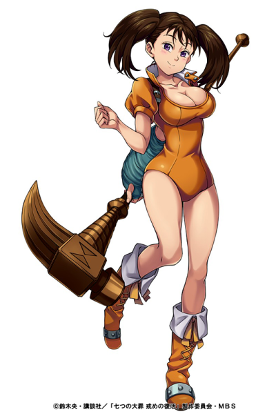

|  | Diane (ディアンヌ, Diannu ?, en Hispanoamérica Diana) es una integrante de los Siete Pecados Capitales, representada por el pecado de la Envidia y además porta la marca de la Serpiente. Su tesoro sagrado es el Martillo de guerra Gideon. Apariencia Diane es una hermosa doncella con ojos de color morados y el cabello castaño largo, el cual lleva atado en dos largas colas de caballo a ambos lados de su cabeza. Su físico es muy atractivo. A pesar de ser una joven de aspecto hermoso, ella es de hecho una gigante perteneciente al Clan de los Gigantes. Ella lleva un traje de una sola pieza de color naranja, botas que se extienden casi hasta las rodillas, y un guante de metal que está incrustado con pepitas de metal brillante. Según ella, su actual traje y vestimenta se encuentran de moda. Además suele llevar frecuentemente una mochila en su espalda. Su marca de la serpiente se encuentra en la parte externa del muslo izquierdo. Personalidad Como el pecado de la envidia de la serpiente, sus rasgos principales son los celos y la envidia, pero a pesar de su comportamiento y su aspecto, es una persona muy amable y amigable con quienes la rodean. Ella muestra gran afecto y una cierta fascinación por Meliodas, así que cuando lo vio junto a Elizabeth, ella se puso muy celosa y comenzó a golpearlo llamándolo tramposo. Ella es una persona muy fuerte y segura de sus habilidades, con gran ímpetu y de un espíritu valiente. Sin embargo, a pesar de sus fuertes convicciones, su verdadero deseo es ser una persona pequeña y normal. Es muy protectora con sus amigos sobre todo con Meliodas, a tal punto, que es capaz de enfrentar sus peores miedos con tal de asegurar la vida de sus compañeros. |
|---|---|